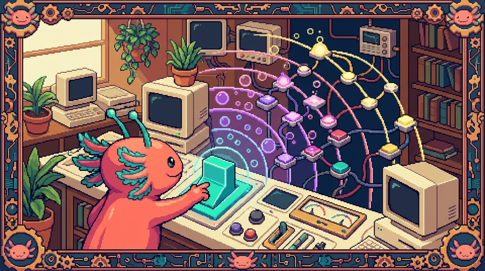

Capitulo 07 — Eventos a fondo

Hola de nuevo, soy Bit, tu ajolote guia. En el capitulo anterior aprendimos a "escuchar" un clic con
addEventListener. Hoy abrimos la caja y miramos que hay dentro de un evento: de donde salio, por que un clic en un boncito tambien "despierta" a su contenedor, y como un solo escucha puede manejar cientos de elementos sin sudar. Vamos a usar el menu y el formulario reales de tunal-digital. Respira: esto es de lo mas util que vas a aprender en JavaScript. Mueve la cola, que arrancamos.
1. Repaso rapido: que es un evento
Antes de profundizar, recordemos la base. Un evento es algo que ocurre en la pagina: el usuario hace clic, mueve el raton, presiona una tecla, envia un formulario o desplaza la pagina. JavaScript puede reaccionar a esas cosas.
🟦 ¿Que significa? — Evento
Es un aviso de que "algo paso" en el navegador (un clic, una tecla, un envio de formulario). El navegador lo crea solo y tu decides si reaccionas o no. Para que sirve: hacer paginas interactivas, que respondan a lo que hace la persona. Donde se usa en un repo real: en
main.jsde tunal-digital, un clic en el boton del menu abre la navegacion, y un envio de formulario manda el mensaje de contacto.🟦 ¿Que significa? — Listener (escucha)
Es una funcion que se queda "esperando" a que ocurra cierto evento. Cuando ocurre, el navegador la ejecuta. Para que sirve: conectar un evento (ej. clic) con el codigo que quieres que corra. Donde se usa en un repo real:
boton.addEventListener("click", abrirMenu)en tunal-digital registra un escucha sobre el boton hamburguesa.
// La forma que ya conoces de registrar un escucha
const boton = document.querySelector(".menu-toggle");
boton.addEventListener("click", function () {
console.log("Hiciste clic en el menu");
});
💡 Tip
addEventListenersignifica literalmente "agregar un escucha de eventos". Si lees el nombre en ingles despacio, te dice exactamente lo que hace.
2. El objeto event: la "ficha" de lo que paso
Cada vez que ocurre un evento, el navegador le pasa a tu funcion un regalo: un objeto lleno de informacion sobre lo que acaba de pasar. Por costumbre lo llamamos event o, mas corto, e.
🟦 ¿Que significa? — Objeto event
Es un objeto (una "ficha" con datos) que el navegador entrega a tu funcion cuando ocurre un evento. Contiene quien lo disparo, donde paso el raton, que tecla se presiono, etc. Para que sirve: saber detalles del evento para reaccionar mejor (que elemento, que tecla, posicion del raton...). Donde se usa en un repo real: en el formulario de contacto de tunal-digital, el escucha del
submitrecibe eleventy llama aevent.preventDefault()para evitar que la pagina se recargue.
boton.addEventListener("click", function (event) {
// 'event' es la ficha con todos los datos de este clic
console.log(event.type); // "click"
console.log(event.target); // el elemento donde se hizo clic
});
Fijate en function (event): ese parametro lo rellena el navegador automaticamente. Tu no lo pasas; el navegador te lo da.
🟦 ¿Que significa? — event.type
Una propiedad del objeto event que te dice el nombre del evento como texto:
"click","submit","keydown", etc. Para que sirve: saber que clase de evento estas manejando, util cuando una misma funcion atiende varios tipos. Donde se usa en un repo real: en el chat con IA de tunal-digital podrias revisarevent.typepara distinguir un clic del boton "Enviar" de unkeydowncon Enter.🔎 En tu codigo
En
main.jsde tunal-digital, las funciones de atajo (esos helpers cortos para no escribirdocument.querySelectormil veces) terminan registrando escuchas que reciben esteevent. Cuando vease =>ofunction (e), eseees exactamente el objeto event del que hablamos.
2.1 Propiedades utiles del event
Segun el tipo de evento, el event trae datos distintos:
- En un clic:
event.clientXyevent.clientY(posicion del raton en pixeles). - En una tecla:
event.key(la tecla, ej."Enter"). - En un formulario: el evento
submit, donde brillapreventDefault().
🟦 ¿Que significa? — preventDefault()
Es un metodo del objeto event que cancela la accion "por defecto" que el navegador haria. Por ejemplo, un formulario, por defecto, recarga la pagina al enviarse;
preventDefault()lo evita. Para que sirve: tomar el control tu mismo en vez de dejar que el navegador haga su comportamiento automatico. Donde se usa en un repo real: clave en el formulario de tunal-digital: sinpreventDefault(), al enviar el mensaje la pagina se recargaria y nunca llegaria elfetchal Worker.
const form = document.querySelector("#contacto");
form.addEventListener("submit", function (event) {
event.preventDefault(); // no recargues la pagina, yo me encargo
console.log("Enviando el mensaje sin recargar...");
// aqui iria el fetch al Worker
});
3. target vs currentTarget: dos preguntas distintas
Esta es una de las confusiones mas comunes para principiantes, asi que ve despacio. Imagina un boton que tiene un icono y un texto dentro:
<button class="menu-toggle">
<span class="icono">☰</span>
<span class="texto">Menu</span>
</button>
Si haces clic justo encima del icono ☰, ¿en que elemento hiciste clic exactamente? En el <span class="icono">, no en el <button>. Pero tu escucha esta puesto en el <button>. Aqui entran dos propiedades:
🟦 ¿Que significa? — event.target
Es el elemento exacto donde nacio el evento, el mas profundo que recibio el clic (en el ejemplo, el
<span class="icono">). Para que sirve: saber con precision sobre que cosa hizo clic la persona. Donde se usa en un repo real: en el menu de tunal-digital, si pones un solo escucha en la lista<ul>y haces clic en un enlace,event.targette dice exactamente cual enlace tocaste.🟦 ¿Que significa? — event.currentTarget
Es el elemento que tiene puesto el escucha, es decir, donde llamaste a
addEventListener(en el ejemplo, el<button>). Para que sirve: referirte siempre al elemento "dueño" del escucha, sin importar donde nacio el clic. Donde se usa en un repo real: util en tunal-digital cuando el escucha vive en un contenedor pero el clic puede caer en cualquier hijo;currentTargetsiempre es el contenedor.
const boton = document.querySelector(".menu-toggle");
boton.addEventListener("click", function (event) {
console.log(event.target); // <span class="icono"> (donde caiste)
console.log(event.currentTarget); // <button class="menu-toggle"> (donde escuchas)
});
💡 Tip
Regla mnemotecnica de Bit: target = el objetivo del dedo (donde aterrizo el clic). currentTarget = el current(actual) dueño del escucha. Si no recuerdas cual usar, casi siempre quieres
currentTargetcuando trabajas con el elemento al que pusiste el escucha.⚠️ Cuidado
Si guardas el evento y lo lees mas tarde (por ejemplo en un
setTimeout),currentTargetpuede aparecer comonull. El navegador "limpia"currentTargetcuando termina el evento. Si necesitas ese elemento despues, guardalo en una variable mientras el evento sigue vivo.
4. Propagacion y burbujeo (bubbling)
Ahora la parte que parece magia pero tiene logica. Cuando haces clic en un elemento que esta dentro de otro, el evento no se queda solo en ese elemento: "sube" por todos sus contenedores, como una burbuja en un vaso de agua que sube a la superficie.
🟦 ¿Que significa? — Propagacion de eventos
Es el viaje que hace un evento por el arbol de elementos HTML. No afecta solo al elemento tocado, sino que recorre tambien a sus ancestros. Para que sirve: entender por que un clic en un hijo tambien "despierta" escuchas puestos en sus padres. Donde se usa en un repo real: en el menu de tunal-digital, un clic en un
<a>dentro de un<li>dentro de un<ul>toca, en orden, a los tres.🟦 ¿Que significa? — Bubbling (burbujeo)
Es la fase de la propagacion en la que el evento sube desde el elemento tocado hacia sus padres, abuelos, etc., hasta el
document. Es como una burbuja que sube. Para que sirve: permite poner un solo escucha "arriba" y atender clics de muchos hijos (la base de la delegacion, seccion 6). Donde se usa en un repo real: tunal-digital puede poner un escucha en el<ul>del menu y atender clics de todos los<a>gracias al burbujeo.
Visualicemoslo. Con esta estructura:
<ul id="menu">
<li><a href="#inicio">Inicio</a></li>
<li><a href="#servicios">Servicios</a></li>
</ul>
Si pones escuchas en los tres niveles y haces clic en un enlace:
const menu = document.querySelector("#menu");
const item = document.querySelector("#menu li");
const enlace = document.querySelector("#menu a");
enlace.addEventListener("click", () => console.log("1) enlace"));
item.addEventListener("click", () => console.log("2) li"));
menu.addEventListener("click", () => console.log("3) ul"));
Al hacer clic en el enlace veras en la consola, en este orden:
1) enlace
2) li
3) ul
El evento nacio en el <a> y fue burbujeando hacia arriba. Eso es el bubbling en accion.
🟦 ¿Que significa? — Capturing (fase de captura)
Es la fase contraria al burbujeo: antes de bajar al elemento tocado, el evento desciende desde el
documenthacia el. Casi nunca la usaras, pero existe. Para que sirve: interceptar un evento "antes" de que llegue al elemento; util en casos avanzados. Donde se usa en un repo real: raro en tunal-digital; se activa pasandotruecomo tercer argumento:addEventListener("click", fn, true). Por defecto esfalse(burbujeo).💡 Tip
El orden completo real es: captura (de arriba hacia abajo) → llega al objetivo → burbujeo (de abajo hacia arriba). El 99% del tiempo solo te importa el burbujeo. Si nunca pasas
true, ya estas usando burbujeo.
5. stopPropagation: cortar el viaje
A veces NO quieres que el evento siga subiendo. Por ejemplo: tienes un escucha en el document que cierra el menu cuando clicas "fuera", pero un clic dentro del menu no deberia cerrarlo. Para eso cortas la propagacion.
🟦 ¿Que significa? — stopPropagation()
Es un metodo del objeto event que detiene el viaje del evento: los escuchas de los ancestros ya no se enteraran de este evento. Para que sirve: evitar que un clic "se escape" hacia contenedores que reaccionarian de forma no deseada. Donde se usa en un repo real: en tunal-digital, util si hay un escucha global que cierra menus al hacer clic fuera; dentro del menu se llama
stopPropagation()para que ese clic no cuente como "fuera".
const menu = document.querySelector("#menu");
document.addEventListener("click", function () {
console.log("clic en cualquier parte -> cerrar menu");
});
menu.addEventListener("click", function (event) {
event.stopPropagation(); // este clic NO llega al document
console.log("clic dentro del menu -> no lo cierres");
});
Con stopPropagation(), un clic dentro de #menu ya no dispara el escucha del document.
⚠️ Cuidado
No abuses de
stopPropagation(). Si cortas la propagacion en muchos sitios, mas tarde te costara entender por que ciertos escuchas globales "no se enteran" de nada. Usalo solo cuando tengas una razon clara.🟦 ¿Que significa? — stopImmediatePropagation()
Hermano mayor del anterior: ademas de detener el viaje a los ancestros, evita que se ejecuten OTROS escuchas del mismo evento en el mismo elemento. Para que sirve: cuando un elemento tiene varios escuchas y quieres que ninguno mas corra. Donde se usa en un repo real: muy raro; en tunal-digital normalmente basta con
stopPropagation().💡 Tip
No confundas
stopPropagation()conpreventDefault().preventDefault()cancela la accion del navegador (recargar, seguir un enlace).stopPropagation()corta el viaje del evento entre elementos. Son cosas distintas y a veces se usan juntas.
6. Delegacion de eventos: un escucha para muchos
Aqui esta la joya del capitulo. Imagina que el menu de tunal-digital tiene 8 enlaces y quieres reaccionar al clic de cada uno. La idea ingenua seria poner 8 escuchas, uno por enlace. Pero gracias al burbujeo hay algo mucho mejor: pones UN solo escucha en el <ul> padre y dejas que los clics suban hasta el.
🟦 ¿Que significa? — Delegacion de eventos
Es la tecnica de poner un solo escucha en un elemento padre y usar
event.targetpara saber cual hijo recibio el evento. Aprovecha el burbujeo. Para que sirve: manejar muchos elementos con un solo escucha; tambien funciona con elementos que aun no existen (se crean despues). Donde se usa en un repo real: en tunal-digital, un solo escucha en el<ul>del menu atiende los clics de todos los enlaces sin poner uno por enlace.
const menu = document.querySelector("#menu");
menu.addEventListener("click", function (event) {
// ¿El clic cayo en un enlace?
const enlace = event.target.closest("a");
if (!enlace) return; // clic en otro lado del ul; lo ignoramos
event.preventDefault();
console.log("Vas a la seccion:", enlace.getAttribute("href"));
});
🟦 ¿Que significa? — closest()
Es un metodo de los elementos que busca, empezando por el propio elemento y subiendo por sus padres, el primero que coincida con un selector CSS. Devuelve ese elemento o
null. Para que sirve: en delegacion, encontrar el "enlace" o "boton" real aunque el clic cayera en un icono dentro de el. Donde se usa en un repo real: en el menu de tunal-digital,event.target.closest("a")asegura que aunque cliques un icono dentro del enlace, obtengas el<a>completo.💡 Tip
La delegacion brilla con listas dinamicas. En RachaSimple (React + TanStack Query) las listas se vuelven a renderizar cuando llegan datos nuevos del servidor; con delegacion, un escucha en el contenedor sigue funcionando aunque los hijos cambien. (En React, eso si, normalmente usas
onClickdirectamente y el framework hace la delegacion por ti debajo.)🔎 En tu codigo
En el JavaScript vanilla de tunal-digital la delegacion es ideal porque no hay framework que te ayude: tu pones el escucha en el contenedor y resuelves con
event.target. En Faro/Organizer (Next.js + React), en cambio, declarasonClicken el JSX y React gestiona la delegacion internamente; entender este capitulo te ayuda a saber que pasa por debajo.
6.1 Por que la delegacion es genial
- Menos memoria: un escucha en vez de cien.
- Funciona con elementos nuevos: si agregas un
<li>despues con JavaScript, el escucha del padre ya lo cubre, sin registrar nada nuevo. - Codigo mas limpio: toda la logica del menu vive en un solo lugar.
7. Eventos de teclado
No todo es clic. El teclado tiene sus propios eventos, muy usados en buscadores y chats.
🟦 ¿Que significa? — keydown
Es el evento que se dispara en el momento en que se presiona una tecla (antes de soltarla). Para que sirve: reaccionar a teclas: enviar con Enter, cerrar con Escape, navegar con flechas. Donde se usa en un repo real: en el chat con IA de tunal-digital, detectar Enter en el
keydownpermite enviar el mensaje sin tener que clicar el boton.🟦 ¿Que significa? — event.key
Es la propiedad que te dice, como texto, que tecla se presiono:
"Enter","Escape","a","ArrowUp", etc. Para que sirve: identificar la tecla exacta para decidir que hacer. Donde se usa en un repo real: en el chat de tunal-digital,if (event.key === "Enter")decide enviar el mensaje al Worker.
const input = document.querySelector("#mensaje-chat");
input.addEventListener("keydown", function (event) {
if (event.key === "Enter" && !event.shiftKey) {
event.preventDefault(); // no metas un salto de linea
console.log("Enviar:", input.value);
// aqui iria el fetch al Worker de tunal-digital
}
});
💡 Tip
event.shiftKey(y tambienevent.ctrlKey,event.altKey) te dicen si esas teclas estaban presionadas a la vez. El truco "Enter envia, Shift+Enter hace salto de linea" se logra justo asi, como en el ejemplo.⚠️ Cuidado
Existe un viejo
event.keyCode(un numero por tecla). Esta obsoleto: usa siempreevent.key, que es texto legible y no depende de codigos numericos misteriosos.
8. Eventos de formulario
Los formularios tienen eventos propios mas alla del clic en el boton. tunal-digital tiene un formulario de contacto, asi que esto te toca de cerca.
🟦 ¿Que significa? — submit
Es el evento que se dispara cuando se envia un formulario (al clicar un boton de tipo submit o al presionar Enter en un campo). Se escucha sobre el
<form>, no sobre el boton. Para que sirve: interceptar el envio para validar datos o mandarlos confetchsin recargar. Donde se usa en un repo real: en tunal-digital, elsubmitdel formulario de contacto se intercepta para enviar el mensaje al Worker viafetch.🟦 ¿Que significa? — input (evento)
Es el evento que se dispara cada vez que cambia el valor de un campo mientras la persona escribe. Para que sirve: validar o reaccionar en vivo (contar caracteres, habilitar el boton, mostrar errores al instante). Donde se usa en un repo real: en tunal-digital podrias usar
inputpara activar el boton "Enviar" solo cuando el campo de email tenga algo escrito.🟦 ¿Que significa? — change
Es el evento que se dispara cuando un campo cambia y la persona "termina" (por ejemplo, sale del campo o elige una opcion de un
<select>). Para que sirve: reaccionar a cambios completados, no a cada tecla. Donde se usa en un repo real: util en Faro/Organizer para un<select>que filtra proyectos: elchangedispara la nueva consulta.
const form = document.querySelector("#contacto");
const email = document.querySelector("#email");
const enviar = document.querySelector("#enviar");
// Reaccion en vivo mientras escribe:
email.addEventListener("input", function (event) {
enviar.disabled = event.target.value.trim() === "";
});
// Envio del formulario:
form.addEventListener("submit", function (event) {
event.preventDefault();
const datos = {
email: email.value,
mensaje: form.querySelector("#mensaje").value,
};
console.log("Enviando al Worker:", datos);
// fetch("https://worker.tunal/...", { method: "POST", body: JSON.stringify(datos) })
});
🔎 En tu codigo
En
main.jsde tunal-digital, el envio del formulario combina dos cosas de este capitulo:event.preventDefault()para no recargar, y luego unfetchal Worker para mandar el mensaje. Sin elpreventDefault, el navegador recargaria y tufetchnunca terminaria.💡 Tip
Para leer todos los campos de un formulario de golpe existe
new FormData(form). Es comodisimo cuando el formulario tiene muchos campos, porque no tienes que leer uno por uno.
9. Evento de scroll (desplazamiento)
🟦 ¿Que significa? — scroll
Es el evento que se dispara cuando se desplaza (sube o baja) una pagina o un contenedor. Para que sirve: efectos como una barra que se encoge al bajar, un boton "subir arriba" que aparece, o animaciones al desplazar. Donde se usa en un repo real: en tunal-digital podria usarse para que el header cambie de estilo cuando el usuario baja un poco la pagina.
window.addEventListener("scroll", function () {
const bajamos = window.scrollY > 80;
document.querySelector("header").classList.toggle("compacto", bajamos);
});
⚠️ Cuidado
El evento
scrollse dispara MUCHISIMAS veces por segundo. Si dentro haces algo pesado, la pagina se sentira lenta. La solucion (que veras mas adelante) es "limitar" la frecuencia con tecnicas como throttle o debounce, o usar el modernoIntersectionObserver. Por ahora, manten el codigo del scroll muy ligero.🟦 ¿Que significa? — window.scrollY
Es una propiedad que te dice cuantos pixeles se ha desplazado la pagina verticalmente desde arriba. Para que sirve: decidir acciones segun cuanto bajo la persona (ej. mostrar un boton tras 300px). Donde se usa en un repo real: en tunal-digital, comparar
window.scrollYcon un numero para activar el header compacto.
10. removeEventListener: dejar de escuchar
Registrar escuchas esta bien, pero a veces hay que quitarlos: para evitar duplicados, liberar memoria o desactivar algo temporalmente.
🟦 ¿Que significa? — removeEventListener()
Es el metodo que quita un escucha previamente registrado, para que ese evento ya no ejecute esa funcion. Para que sirve: dejar de reaccionar a un evento; evita fugas de memoria y comportamientos duplicados. Donde se usa en un repo real: en tunal-digital, util para que un escucha temporal (ej. cerrar un modal con Escape) deje de existir cuando el modal se cierra.
La regla de oro: para quitar un escucha necesitas la misma funcion con nombre que usaste para agregarlo. Una funcion anonima no se puede quitar porque no tienes como referirte a ella.
function alPresionarEscape(event) {
if (event.key === "Escape") {
console.log("Cerrar modal");
// y ya que cerramos, dejamos de escuchar:
document.removeEventListener("keydown", alPresionarEscape);
}
}
// Al abrir el modal, empezamos a escuchar:
document.addEventListener("keydown", alPresionarEscape);
⚠️ Cuidado
Esto NO funciona para quitar un escucha:
javascript elemento.addEventListener("click", () => hola()); elemento.removeEventListener("click", () => hola()); // ¡otra funcion distinta!Aunque el codigo "se vea igual", son dos funciones diferentes en memoria.removeEventListenerno encuentra nada que quitar. Por eso, si vas a quitar un escucha, usa una funcion con nombre.🟦 ¿Que significa? — opcion
onceEs una opcion de
addEventListener({ once: true }) que hace que el escucha se ejecute UNA sola vez y se quite solo. Para que sirve: evitar tener que llamar aremoveEventListenera mano cuando solo quieres reaccionar la primera vez. Donde se usa en un repo real: en tunal-digital, ideal para una animacion de bienvenida que solo debe ocurrir el primer clic.
boton.addEventListener("click", function () {
console.log("Esto solo corre una vez");
}, { once: true });
💡 Tip
En frameworks como RachaSimple (React) o Faro/Organizer (Next.js), cuando agregas escuchas "a mano" dentro de un
useEffect, debes quitarlos en la funcion de limpieza del efecto. Es exactamente esteremoveEventListener, y es la causa numero uno de bugs raros cuando se olvida. Anota esto: lo veras de nuevo en el modulo de React.
11. Juntando todo: el menu de tunal-digital
Cerremos con un ejemplo que une varias piezas del capitulo: abrir/cerrar el menu, cerrarlo al clicar fuera (propagacion), y delegar los clics de los enlaces.
const toggle = document.querySelector(".menu-toggle");
const menu = document.querySelector("#menu");
// 1) Abrir/cerrar con el boton hamburguesa
toggle.addEventListener("click", function (event) {
event.stopPropagation(); // que este clic no llegue al document
menu.classList.toggle("abierto");
});
// 2) Cerrar el menu si se hace clic fuera de el
document.addEventListener("click", function () {
menu.classList.remove("abierto");
});
// 3) Delegacion: un solo escucha para todos los enlaces
menu.addEventListener("click", function (event) {
event.stopPropagation(); // clic dentro del menu no lo cierra
const enlace = event.target.closest("a");
if (!enlace) return;
console.log("Navegar a:", enlace.getAttribute("href"));
});
Lee este bloque dos veces: usa stopPropagation (seccion 5), delegacion con closest (seccion 6) y classList.toggle. Es codigo realista del tipo que vive en main.js de tunal-digital.
🔎 En tu codigo
Compara mentalmente: en tunal-digital (vanilla) escribes tu mismo toda esta orquestacion de escuchas. En PolyPaw (Python/Flet) no hay DOM ni eventos del navegador: Flet maneja la interaccion con sus propios callbacks. Y en polypaw-nas (Ubuntu/Samba/Cockpit) directamente no hay frontend: son servicios de servidor. Cada repo vive en un mundo distinto; este capitulo es del mundo del navegador.
✅ Checklist — ¿ya domino esto?
- [ ] Se que el objeto
eventes la "ficha" con datos que el navegador pasa a mi funcion. - [ ] Entiendo que
preventDefault()cancela la accion automatica del navegador (ej. recargar al enviar un formulario). - [ ] Puedo explicar la diferencia entre
event.target(donde nacio el clic) yevent.currentTarget(donde esta el escucha). - [ ] Entiendo el burbujeo: un evento sube desde el elemento tocado hacia sus padres.
- [ ] Se cuando usar
stopPropagation()y por que no debo abusar de el. - [ ] Distingo
stopPropagation()(corta el viaje) depreventDefault()(cancela la accion del navegador). - [ ] Puedo escribir delegacion de eventos: un escucha en el padre +
event.target.closest(...). - [ ] Se leer la tecla con
event.keyy reaccionar a Enter o Escape. - [ ] Conozco los eventos
submit,inputychangede formularios. - [ ] Se que
scrollse dispara muchisimas veces y hay que mantenerlo ligero. - [ ] Puedo quitar un escucha con
removeEventListenerusando una funcion con nombre, y conozco la opcion{ once: true }.
🧪 Ejercicios
-
(Sin computadora) Dibuja en papel la estructura
ul > li > adel menu y, con flechas, muestra el camino del burbujeo cuando haces clic en un enlace. Escribe al lado quien seriaevent.targety quienevent.currentTargetsi el escucha esta en el<ul>. -
💻 Crea un HTML con un
<button>que tenga dentro un<span>con texto. Pon un escucha en el boton y muestra en consolaevent.targetyevent.currentTarget. Haz clic justo sobre el texto del span y comprueba que son distintos. -
💻 Reproduce la delegacion del menu de tunal-digital: un
<ul>con 4 enlaces y UN solo escucha en el<ul>. Al hacer clic en cualquier enlace, muestra en consola elhrefusandoevent.target.closest("a"). Comprueba que un clic en el espacio vacio del<ul>no rompe nada. -
💻 Construye un mini-chat: un
<input>y, al presionar Enter (keydown+event.key === "Enter"), muestra el texto en consola y limpia el campo. Anade que Shift+Enter NO envie (pista:event.shiftKey). Inspirate en el chat con IA de tunal-digital. -
💻 Haz un formulario con un campo de email y un boton "Enviar". Con el evento
input, mantenlo deshabilitado mientras el campo este vacio. Consubmit+preventDefault(), muestra en consola los datos sin recargar la pagina. -
💻 Crea un modal que se cierre al presionar Escape. Usa una funcion con nombre para el
keydowny, al cerrar, quitala conremoveEventListener. Luego reescribelo usando{ once: true }y compara cual te parece mas limpio.
Lo lograste. Hoy desarmaste el objeto
event, viste como las burbujas suben por el DOM y aprendiste el truco mas elegante de todos: la delegacion. Con esto, el menu y el formulario de tunal-digital ya no tienen secretos para ti. Guarda tu codigo, estira las patitas y nos vemos en el siguiente capitulo. — Bit 🪸